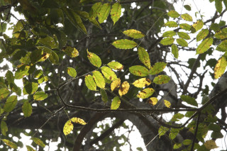
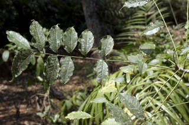
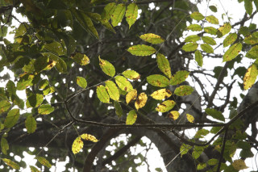
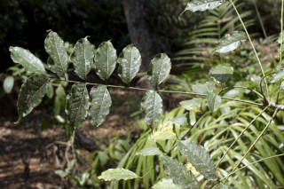
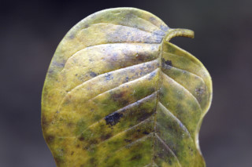
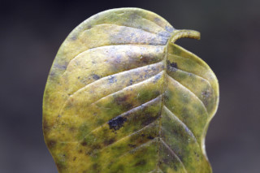

| Leaves : | Leaves compound , imparipinnate , alternate , spiral , clustered at twig ends; rachis canaliculate , glabrous ; petiolule 0.3 cm long, canaliculate in cross section, glabrous ; leaflets 15-23, opposite , 6.5-11 x 3.5-4.5 cm, oblong , elliptic-oblong , apex caudate to acuminate ( acumen up to 3 cm long), base asymmetric , margin crenulate with glands at sinuses, coriaceous , sparingly glandular punctate ; midrib canaliculate above; secondary_nerves 6-12 pairs; tertiary_nerves admedially ramified to broadly reticulate . |
 





 
